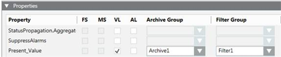

Properties Expander
In the Properties expander, you can enable the properties for the log database, and for the history database.

The Properties expander allows you to set a property. It also allows you to assign the data points to the Archive Group and Filter Group.

A grayed-out check box for a property cannot be selected. The FS and MS columns only display if an alarm is defined for this property.
Value Log (VL)
When selected, a change in status for the data point property is entered in the Value Log database.
History logs must not be released for all properties. Otherwise, depending on the project size, it can result in a large amount of data released to the database.
The precision for a 64-bit value is supported till first 15 digits (approximately 2^49) as it is stored as a float.
Activity Log for Events (AL)
When selected, a change in status for the data point property is entered in the Activity Log database.
Alarm Configuration Field System (FS)
When selected, it displays whether an alarm configuration is defined in the field system. The check box is read-only.
Alarm Configuration Management Station (MS)
When selected, it displays whether a management station is defined in the Alarm expander. The check box is read-only.
Archive Group
Select an Archive Group from the available Custom Archive Groups.
Filter Group
Select a Filter Group from the available Filter Groups.